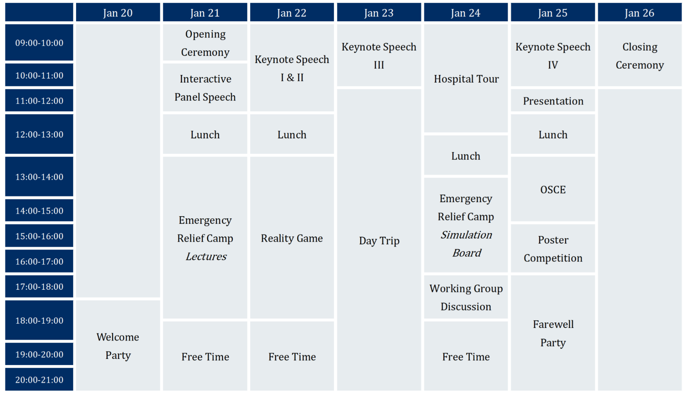

Official Program of the 2019 Asia-Pacific Medical Student's Symposium.
Schedule

Keynote I: Pau-Chung Chen(陳保中), MD, PhD.
Distinguished Professor, National Taiwan University
Prof. Chen Pau-Chung is the Chief of Environmental and Occupational Medicine in National Taiwan University Hospital since 2012. Most of his studies are based on epidemiological methods and focus on occupational and environmental medicine, reproductive and developmental epidemiology, children's environmental health, and cancer chemoprevention. Also, professor has great interest in maternal, reproductive and child health, and secondary data analysis. As a respected scholar, he had published 289 scientific articles and received the Distinguished Research Award from the Ministry of Science and Technology in Taiwan.
Keynote II: Justin Barad, MD, PhD.
CEO and founder of Osso VR, a virtual reality surgical training software company
Justin received his bachelor’s degree in bioengineering and biomedical engineering from the University of California, Berkeley and was awarded his MD from the David Geffen School of Medicine at the University of California, Los Angeles (UCLA). In his residency, Justin identified what could be one of the most pressing medical challenges of this century: how we are training our surgeons. Thus, he co-founded OSSO VR to improve patient safety and modernize surgical techniques. Justin loves being a surgeon entrepreneur, balancing his time in the OR with the exciting energy of innovation in Silicon Valley and the medtech space. Currently, his team at Osso VR is developing a surgical training platform that uses virtual reality and gaming technology to solve critical training challenges for surgeons and healthcare providers around the world.
We are honored to have Dr. Justin Barad here giving us a talk on his stories!
"Bias Towards Action is a powerful tool. Fail often. I got here, but it wouldn’t have happened if it weren’t for failures." #Justin Barad #Imagine Talks 2017
Previous talks of Justin Barad:
Keynote III: Hiroaki Shimokawa(下川宏明), MD, PhD.
Professor and Chairman of Department of Cardiovascular Medicine, Tohoku University Graduate School of Medicine.
Every 3 seconds, someone in the world develops dementia. By 2050, the number of people living with dementia around the world will be over 131 million people, making this disease one of the most significant global, social, economics, health crises of the 21st century. Until now, we have no cure for Alzheimer’s but treatments for symptoms are available and research continues. ‘Together, we can end Alzheimer’s, this is what Alzheimer’s Association claims. But how can we achieve it?
In June 2018, Dr. Hiroaki Shimokawa and his team conducted a research that brings rays of hopes to dementia patients around the world. "The LIPUS therapy is a non-invasive physiotherapy that could apply to high-risk elderly patients without the need for surgery or anaesthesia, and could be used repeatedly," says Shimokawa.
Dr. Shimokawa will talk to us more on LIPUS during the symposium in January 2019! If you are interested in his breakthrough research, see you there!
Keynote IV: Prof. Chang Moo Kang
Associate Professor, Department of Hepatobiliary and Pancreatic Surgery, Yonsei University College of Medicine, Pancreaticobiliary Cancer Clinic, Yonsei Cancer Center, Severance Hospital, Seoul, Korea.
Dr. Kang is actively involved in minimally invasive (robotic and laparoscopic) pancreatectomy and pancreatic cancer surgery. Especially, on the basis of "Yonsei Criteria", he selectively applies minimally invasive radical pancreatectomy to left-side pancreatic cancer patients, proving potential feasibility the patients-oriented surgical approach in treating pancreatic cancer. Patients-oriented pancreatic cancer surgery is his main clinical research field. His translational research interest is cancer metabolism and RON-pancreatic cancer carcinogenesis.

Interactive Panel
Don’t miss out on this awesome occasion to interact directly with invited speakers, outstanding physicians, accomplished scientists as they share their invaluable professional and life experiences with us! Whether it’s about a successful medical career, an eye-opening lab research, or a delicate work-life balance, you’ll definitely bring loads of inspiration home and envision a clearer picture of yourself in the future.
Reality Game
For centuries, the medical community has been safeguarding mankind on the frontline against disease outbreaks. In the reality game “Epidemistery”, you and your team of brilliant researchers will race with time to stop an epidemic. The future of the entire human race is in your hands!
Faced with case reports of mysterious diseases, you’ll have to diagnose them correctly, trace its roots back to Day 0, figure out possible routes of infection, and eventually develop effective treatments before it’s too late. Factual knowledge alone isn’t enough, only a comprehensive strategy and critical decision making can lead you to victory.
Are you ready? Then let’s go and save the world!

Hospital Tour & Hospital Designing Workshop
In cooperation with Yonglin Healthcare Foundation, the Hospital Environment Designing Workshop is designed to engage participants in designing a hospital environment that further addresses the needs of the patients, families, and healthcare providers. Yonglin Healthcare Foundation is a foundation dedicated to “making a difference in fighting against cancer” through health education, cooperation with and donations to related academic facilities, medical institutions, and biomedical companies. One of its most famous projects is the generous donation to National Taiwan University Hospital for the building of the National Taiwan University Cancer Centre (NTUCC).
When it comes to the design and construction of hospitals, the importance of the convenience for all users is often neglected. What kind of environment design in a hospital can truly meet the needs of its users? What inconvenience has the established building structure and interior design, for instance the procedure, flow, and interior design of the clinics, caused the patients and healthcare workers? How can traditional and innovative technologies contribute to improving the hospital environment? What are some of the concepts and innovations we can apply from the perspective of User Experience (UX) Research and Service Design to hospital design? As active participants in a hospital, how can doctors and medical students contribute to the design or redesign of a hospital? These are the aspects the design team of all hospitals should aim to address, and what all medical students are encouraged to think about.

Personal / Group Presentaion
The symposium aims not only to establish a platform for medical students from different backgrounds to broaden their horizons by keynote speeches, interactive panel discussion, hospital visiting, but also to enhance mutual understanding and communication between different countries, regions, and schools in the globalized world. Participants can choose to deliver a short speech regarding various categories, including medical education, basic biomedical research, medical ethic issues, cutting-edge clinical medical treatment in participants’ countries by Powerpoint presentation.
Presentations will be ranked by professor from College of Medicine, National Taiwan University, and the speakers ranked the top will be awarded a certificate. Participating in personal / group presentation is not compulsory; however, we sincerely invite you to share your ideas with all the future doctors, researchers, or scientists in the symposium.
Fill and send this form to apmss2019@gmail.com to sign up for Personal / Group Presentation
OSCE Simulation
Objective Structured Clinical Examination (OSCE) is an evaluation examination of medical clinical skills used to evaluate the clinical knowledge and bedside skill of an interning medical student or doctor in training. The content of the examination includes one or several standardized patients (SP) and the actual simulation of bedside care including collection of clinical information from the patient (history, chief complaint, symptoms, and signs), knowledge from medical research to carry out diagnosis, and treatment plans.
We will invite Professor Ching-Mei Chu from NTU Department of Drama and Theatre and her team of standardized patients from the Taiwanese Standardized Patients Association to allow participants a glimpse of how OSCE is for medical students from different countries. Prof. Chu will first share her experiences with SPs in Taiwan and how OSCE is conducted in the US and Europe. Demonstration will be conducted by the SPs followed by individual practices with the SPs.
Emergency Relief Workshop
Disasters... Nobody wants them, but they never ask for invitation. We can bloody well try to prevent them, but what if we do not succeed? What then? Are we lost? Definitely not! We can do a lot and some of that will be the aim of this workshop!
As its name says, the main topics will be disasters (natural, biological, chemical or even man-made) and medicine with its specifications during such unfortunate events. This combination, disaster medicine, will bring you revision of your first-aid skills, will advise you how lo lead as a medical professional in the moment of need, and will start the discussion about sometimes otherwise diminished human rights and necessity to advocate for them.

Day Trip and Farewell Party
Aside from indoor activities, we’ve also arranged a day tour for participants to take a glimpse of Taiwan’s vibrant culture and spectacular nature! This year, we’re going to Longshan Temple, Danshui and Bali. We invite you to experience the typical folk religious culture in Taiwan and visit the famous old street of Danshui and Bali, riding a bicycle along the river and know more about prehistoric culture in northern Taiwan.
In addition to academic sessions, farewell party welcomes every participant to enjoy a night of music, dancing, performances, leaving a great memory staying in Taipei. You can also share the culture of your country with everyone and get to know other cultures as well.